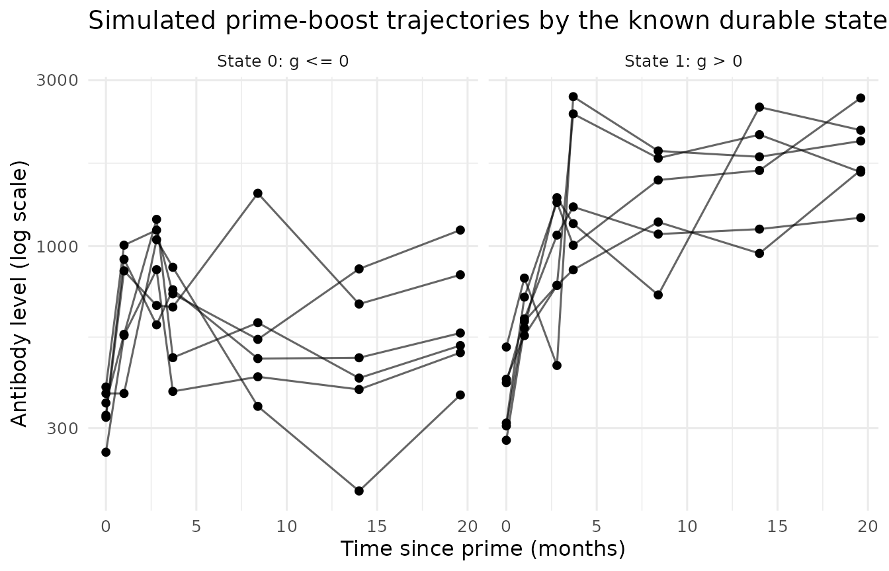
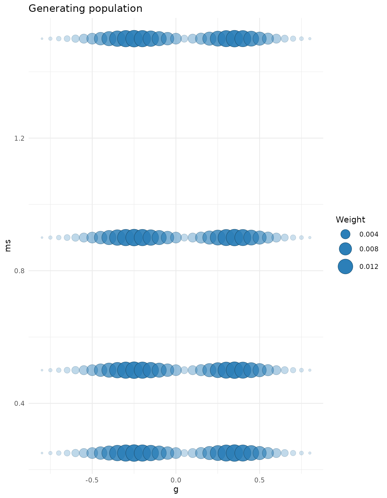
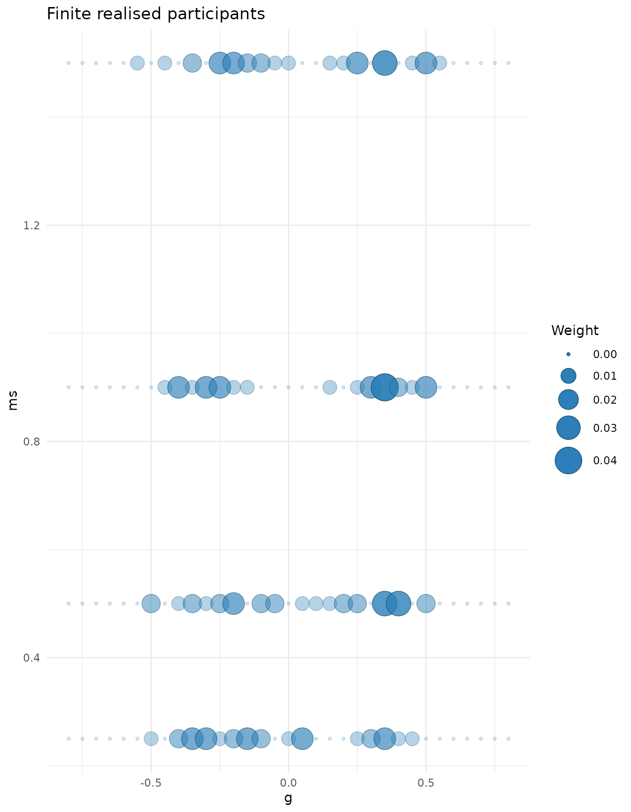
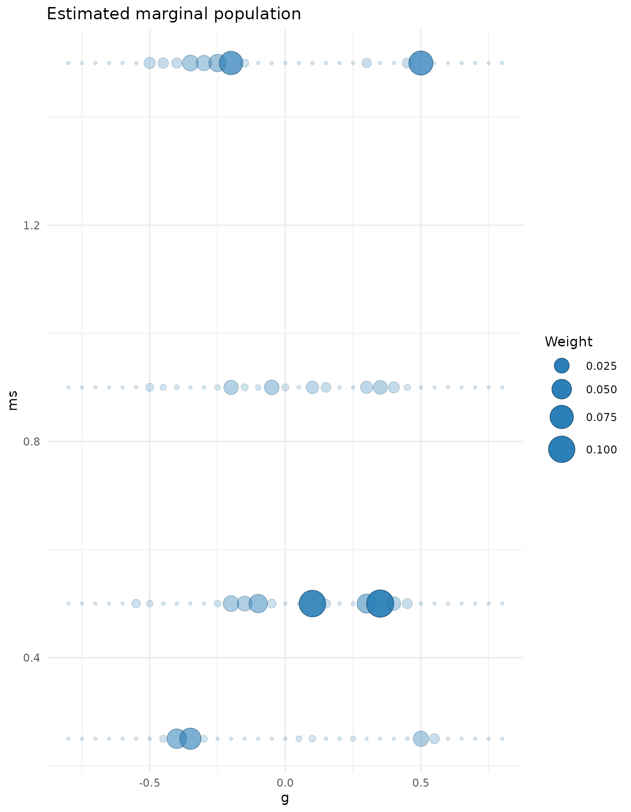
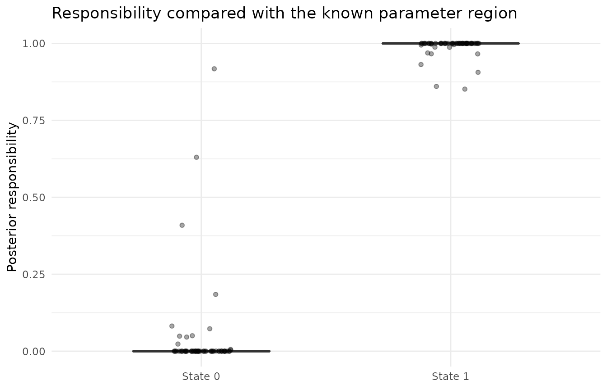
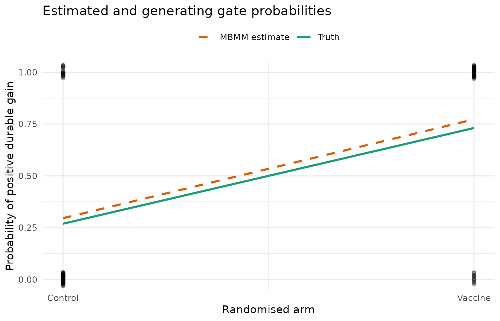

library(mbmm)
library(ggplot2)
theme_set(theme_minimal(base_size = 12))
auc <- function(score, positive) {
r <- rank(score)
np <- sum(positive)
nn <- sum(!positive)
(sum(r[positive]) - np * (np + 1) / 2) / (np * nn)
}What this vignette must establish
Scientific question: does assignment to a vaccine arm change the probability that a booster produces a positive durable antibody gain?
Why MBMM: durability is a property of an underlying plateau, not of one observed visit. A short-lived peak can be large even when the long-lived level does not improve.
Route II: there is no labelled reference population. Before examining the outcomes, state 1 is defined as the region
where is the long-lived level after prime and is the long-lived level after boost. A marginal kinetic population is estimated and then restricted to or its complement.
Because the data are simulated, success can be checked against the known state and known gate. MBMM should recover the arm effect, classify the latent region accurately, and retain adequate estimated mass on both sides of the prespecified boundary.
The hierarchy in scientific language
| MBMM object | Meaning in this simulation |
|---|---|
| repeated antibody measurements spanning prime and boost | |
| the participant’s durable gain satisfies | |
| the durable gain satisfies | |
| randomised arm indicator | |
| logistic gate with true intercept and arm slope | |
| marginal population over , estimated without state labels | |
| restricted and renormalised on and |
The boundary at zero is fixed by the biological question. It is not tuned to maximise separation or significance.
Mechanistic trajectory: the prime-boost antibody ODE
Between immunisations, the Andraud model satisfies
where is short-lived antibody production and is the measured antibody level. The solution is a sum of exponential components. The boost changes the short- and long-lived production fluxes; the long-lived asymptotes before and after boost are and .
andraud_trajectory() evaluates the closed-form
trajectory using the more interpretable levels
and the short-lived decay
.
Here only
and
vary so that the Route II construction stays visible.
Simulate the known gate and kinetic truth
set.seed(22)
n <- 120
arm <- rbinom(n, 1, 0.5)
alpha_true <- -1
beta_true <- 2
pi_true <- plogis(alpha_true + beta_true * arm)
z <- rbinom(n, 1, pi_true)
c(true_probability_control = plogis(alpha_true),
true_probability_vaccine = plogis(alpha_true + beta_true),
realised_state1 = sum(z))
#> true_probability_control true_probability_vaccine realised_state1
#> 0.2689414 0.7310586 58.0000000Create a fixed grid over durable gain and decay. Positive gains are drawn from the positive part of the grid and non-positive gains from its complement. Both states share the same decay grid.
G <- seq(-0.8, 0.8, by = 0.05)
MS <- c(0.25, 0.5, 0.9, 1.5)
candidates <- expand.grid(g = G, ms = MS)
candidates$A0 <- 400
candidates$C1 <- 900
candidates$C2 <- 0.35 * candidates$C1
candidates$D1 <- candidates$C1 * 10^candidates$g
candidates$D2 <- 0.70 * candidates$D1
w_positive_g <- dnorm(G, 0.35, 0.15) * (G > 0)
w_nonpositive_g <- dnorm(G, -0.25, 0.18) * (G <= 0)
w_positive_g <- w_positive_g / sum(w_positive_g)
w_nonpositive_g <- w_nonpositive_g / sum(w_nonpositive_g)
atom <- integer(n)
for (i in seq_len(n)) {
gain_index <- sample(seq_along(G), 1,
prob = if (z[i]) w_positive_g else w_nonpositive_g)
decay_index <- sample(seq_along(MS), 1)
atom[i] <- gain_index + (decay_index - 1L) * length(G)
}
times <- c(0, 1, 2.8, 3.7, 8.4, 14, 19.6)
trajectory <- function(time, theta) {
andraud_trajectory(time, theta$A0, theta$C1, theta$C2,
theta$D1, theta$D2, theta$ms)
}
obs <- do.call(rbind, lapply(seq_len(n), function(i) {
mu <- trajectory(times, candidates[atom[i], ])
data.frame(id = i, time = times,
value = 10^(log10(mu) + rnorm(length(times), 0, 0.12)))
}))
The true state is used only to evaluate recovery. The MBMM fitting
code below does not receive z.
Score all candidates, then fit honest marginal banks
LL <- trajectory_loglik(obs, candidates, trajectory, sigma = 0.12)
loo <- bank_loo(LL, lambda = 1)
dim(loo$weights)
#> [1] 120 132LL[i, j] is the log likelihood of participant
under kinetic atom
.
bank_loo() refits the marginal weights 120 times: the
weights in row
were estimated using every participant except
.
This is essential because the same cohort supplies the marginal kinetic
population and is then scored against it.
Unlike Route I, the bank is not a state-1 bank. It estimates the combined population across both sides of the boundary.
Restrict the marginal population to the two states
state1_region <- candidates$g > 0
score_region <- function(region) {
vapply(seq_len(n), function(i) {
restricted <- restrict_bank(loo$weights[i, ], region)$weights
class_loglik(LL[i, , drop = FALSE], restricted)[1]
}, numeric(1))
}
l1 <- score_region(state1_region)
l0 <- score_region(!state1_region)
mass1 <- rowSums(loo$weights[, state1_region, drop = FALSE])
summary(mass1)
#> Min. 1st Qu. Median Mean 3rd Qu. Max.
#> 0.4959 0.4982 0.5035 0.5024 0.5066 0.5088restrict_bank() first computes the fold-specific mass in
a region and then renormalises the weights inside that region.
Restriction divides by region mass, so near-zero mass would make a Route
II result unstable. Here every fold keeps substantial mass on both
sides.
The following plot distinguishes three different objects: the population used to generate atoms, the finite realised sample of atoms, and the average leave-one-out estimate. They need not match point for point in a finite sample.



Fit and interpret the arm gate
X <- cbind(intercept = 1, vaccine_arm = arm)
fit <- fit_gate(l1, l0, X, firth = TRUE)
oracle <- coef(glm(z ~ arm, family = binomial()))
coefficient_check <- data.frame(
quantity = c("Generating truth", "Oracle using true state", "MBMM"),
intercept = c(alpha_true, oracle[1], fit$gamma[1]),
arm_slope = c(beta_true, oracle[2], fit$gamma[2])
)
coefficient_check
#> quantity intercept arm_slope
#> 1 Generating truth -1.0000000 2.000000
#> 2 Oracle using true state -0.9675840 2.146239
#> 3 MBMM -0.8676758 2.091987Firth penalisation is used because accurate state evidence can create near separation. The oracle again shows the finite-sample logistic result that would be obtained if the state were observed.


Did MBMM recover what it should?
estimated_probability <- tapply(fit$pi, arm, mean)
true_probability <- c(control = plogis(alpha_true),
vaccine = plogis(alpha_true + beta_true))
recovery <- c(
true_arm_slope = beta_true,
oracle_arm_slope = unname(oracle[2]),
mbmm_arm_slope = unname(fit$gamma[2]),
state_AUC = auc(fit$w, z == 1),
uncertain_responsibilities = sum(fit$w > 0.1 & fit$w < 0.9),
minimum_state1_mass = min(mass1),
maximum_state1_mass = max(mass1)
)
round(recovery, 3)
#> true_arm_slope oracle_arm_slope
#> 2.000 2.146
#> mbmm_arm_slope state_AUC
#> 2.092 0.999
#> uncertain_responsibilities minimum_state1_mass
#> 5.000 0.496
#> maximum_state1_mass
#> 0.509
rbind(truth = true_probability, estimated = estimated_probability)
#> control vaccine
#> truth 0.2689414 0.7310586
#> estimated 0.2957382 0.7728213
test <- gate_test(l1, l0, X, firth = TRUE, B = 199, seed = 1)
test
#> <mbmm_test>
#> T_PO (penalised-objective difference) = 28.970 on 1 df
#> not a likelihood ratio: the penalty determinants differ in dimension,
#> so no chi-squared reference is reported
#> permutation p = 0.00500 (B = 199, smallest attainable 0.00500)With firth = TRUE, the statistic is a difference in
penalised objectives, not an ordinary likelihood-ratio statistic. The
reported p-value comes from permuting the arm rows while keeping the
trajectory-derived class likelihoods fixed.
What changed from Route I?
Route I estimated a pure state-1 population from independent labelled donors and paired it with a separate background state. Route II instead estimated one marginal population from the analysis cohort, cross-fitted it, and restricted it to a prespecified region and its complement. The gate calculation is the same after the two class likelihoods have been formed.
This controlled example checks that Route II recovers its known region and arm effect. A real analysis must additionally justify the biological boundary, identifiability of , candidate coverage, the observation model, exchangeability across participants, and adequate region mass in every fold. Return to the scientific and practical guide, or compare the Route I simulation.